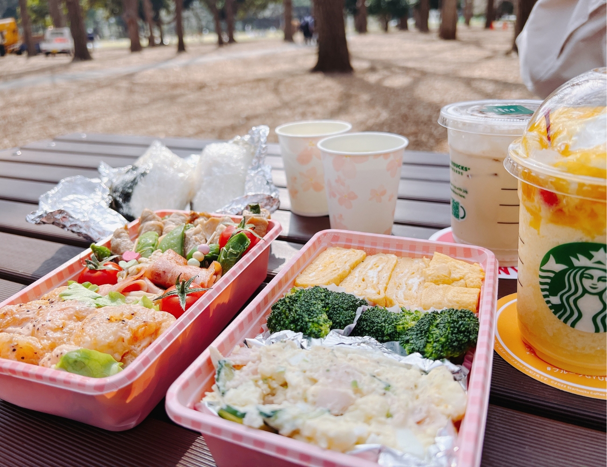

About
Norimichi Miwa
- 25歳 ロサンゼルス出身 オックスフォード大学卒業
- ソフトウェア業界の異端児 天才エンジニアと言われている
- 実家は酒屋で酒好きの血が流れている よく酒に飲まれる
- 状況を顧みずいつも外に出ている 結果先月コロナに罹患
Memories summer
赤レンガ倉庫でお祭り。
夜景が綺麗なのに昼から酒飲んで眠くなって帰る。

川越の神社。
夏に浴衣はアチい。はよ帰りたかった。
抹茶がうめえ。
日本に生まれてよかった理由１位。
長岡花火大会。
全人類にオススメしたい。

公園でピクニック。
野菜食べれんのに、インスタ映え狙いで色鮮やかにするのやめて？
グランピングはガチでエモい。
それだけ。